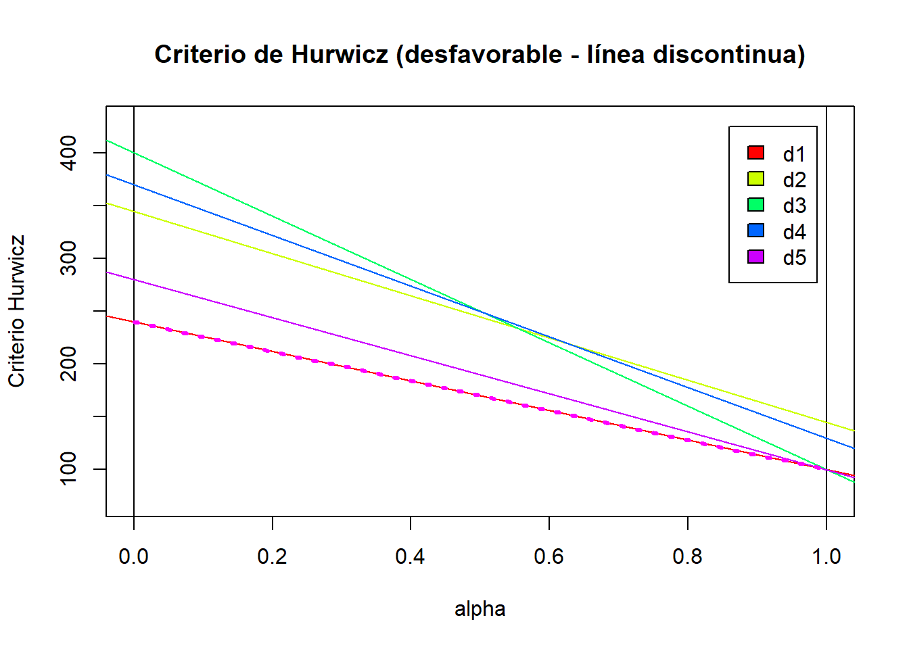

source("teoriadecision_funciones_incertidumbre.R")Trabajo 1. Teoría de la Decisión. Enunciados y soluciones
EJERCICIO 1.
Aplicar los criterios de decisión bajo incertidumbre al siguiente problema considerando una situación favorable (beneficios) y desfavorable (costos)
| e1 | e2 | e3 | e4 | e5 | e6 | |
|---|---|---|---|---|---|---|
| d1 | 100 | 200 | 130 | 150 | 240 | 100 |
| d2 | 300 | 145 | 230 | 345 | 200 | 280 |
| d3 | 120 | 300 | 260 | 400 | 100 | 330 |
| d4 | 180 | 130 | 300 | 370 | 280 | 190 |
| d5 | 200 | 140 | 135 | 280 | 190 | 100 |
Apartado a. Tabla correspondiente a beneficios.
tb01a = crea.tablaX(c(100,200,130,150,240,100,
300,145,230,345,200,280,
120,300,260,400,100,330,
180,130,300,370,280,190,
200,140,135,280,190,100),
numalternativas = 5, numestados = 6)1. Método de Wald
Para cada alternativa se supone que va a pasar lo peor, y elige aquella alternativa que dé mejor valor.
b1 = criterio.Wald(tb01a,favorable=TRUE)
names(b1$AlternativaOptima)[1] "d2"2. Método Optimista
Para cada alternativa se supone que pasará lo mejor, y se elige laa que dé mejor valor.
b2 = criterio.Optimista(tb01a,favorable = TRUE)
names(b2$AlternativaOptima)[1] "d3"3. Método Hurwicz
Combina optimismo y pesimismo usando un coeficiente de optimismo \(\alpha\):
\[ \text{Valor Hurwicz} = \alpha \cdot \max + (1-\alpha) \cdot \min \] Resolvemos considerando \(\alpha\) = 0.5.
b3 = criterio.Hurwicz(tb01a,alfa=0.5,favorable=TRUE)
names(b3$AlternativaOptima)[1] "d3" "d4"Ahora vamos a hacer un análisis de la decisiones en función del \(\alpha\). Para ello disponemos de dos funciones, una que te hace la gráfica, y otra que además te da los intervalos. Usamos la completa:
dibuja.criterio.Hurwicz_Intervalos(tb01a,T)
$AltOptimas
[1] 2 4 3
$PuntosDeCorte
[1] 0.375 0.500
$IntervalosAlfa
Intervalo Alternativa
Soluciones "( 0 , 0.375 )" "2"
"( 0.375 , 0.5 )" "4"
"( 0.5 , 1 )" "3"
Interpretación:
Para valores de \(\alpha\) entre 0 y 0.375, se elegirá la alternativa 2. Para valores entre 0.375 y 0.5 se elegirá la alternativa 4. Para valores entre 0.5 1, elegiremos la 3.
Vemos que efectivamente tenemos el mismo resultado que el obtenido al principio. Justo el \(\alpha\) = 0.5 es el punto de corte entre las rectas. Por eso nos salen dos alternativas.
4. Método Savage
Minimiza el arrepentimiento máximo comparando lo que se pudo ganar y lo que se ganó.
b4 = criterio.Savage(tb01a,favorable=TRUE)
names(b4$AlternativaOptima)[1] "d2"5. Método Laplace
Asume que todos los estados son igualmente probables y elige la alternativa con mayor promedio.
b5 = criterio.Laplace(tb01a,favorable=TRUE)
names(b5$AlternativaOptima)[1] "d3"6. Método Punto Ideal Considera un resultado perfecto y mide la distancia de cada alternativa a ese ideal, eligiendo la más cercana.
b6 = criterio.PuntoIdeal(tb01a,favorable=TRUE)
names(b6$AlternativaOptima)[1] "d2"
Conclusiones:
Tomando los datos de la tabla como beneficios, los resultados que obtenemos son: La decisión 1 y la 5 no se eligen en ningún método. La 2 y la 3 empatan siendo elegidas por 3 métodos. Y la decisión 4 sólo aparece en 1. Por tanto, las mejores decisiones en este caso son la 2 y la 3.
Apartado b. Tabla correspondiente a costes.
1. Método de Wald
Para cada alternativa se supone que va a pasar lo peor, y elige aquella alternativa que dé mejor valor.
c1 = criterio.Wald(tb01a,favorable=FALSE)
names(c1$AlternativaOptima)[1] "d1"2. Método Optimista
Para cada alternativa se supone que pasará lo mejor, y se elige laa que dé mejor valor.
c2 = criterio.Optimista(tb01a,favorable = FALSE)
names(c2$AlternativaOptima)[1] "d1" "d3" "d5"3. Método Hurwicz
Combina optimismo y pesimismo usando un coeficiente de optimismo \(\alpha\):
\[ \text{Valor Hurwicz} = \alpha \cdot \max + (1-\alpha) \cdot \min \]
c3 = criterio.Hurwicz(tb01a,alfa=0.5,favorable=FALSE)
names(c3$AlternativaOptima)[1] "d1"dibuja.criterio.Hurwicz(tb01a, FALSE)
Interpretación:
En este caso, por estar en el caso de costes, debemos mirar la línea más baja. Vemos que para cualquier nivel de alpha, la decisión elegida es la d1. Vemos que efectivamente tenemos el mismo resultado que el obtenido al principio.
4. Método Savage
Minimiza el arrepentimiento máximo, que se calcula a partir del coste extra que se podría haber evitado.
c4 = criterio.Savage(tb01a,favorable=FALSE)
names(c4$AlternativaOptima)[1] "d5"5. Método Laplace
Calcula el promedio de costes suponiendo igual probabilidad para cada estado.
c5 = criterio.Laplace(tb01a,favorable=FALSE)
names(c5$AlternativaOptima)[1] "d1"6. Método Punto Ideal
Compara la distancia a un coste ideal mínimo, eligiendo el más cercano al ideal (menor coste).
c6 = criterio.PuntoIdeal(tb01a,favorable=FALSE)
names(c6$AlternativaOptima)[1] "d1"
Conclusiones:
Tomando los datos de la tabla como costes, los resultados que obtenemos son: La decisión 2 y la 4 no se eligen en ningún método. La 3 es elegida una única vez y la 5, dos veces. La decisión 1 es la que más veces es elegida por 5 métodos.
Por tanto, la mejor decisión en este caso es la 1.
EJERCICIO 2
Marina es una alumna del grado en Estadística que acaba este año. El próximo año quiere realizar un máster para mejorar sus oportunidades laborales, pero solo puede escoger uno. Todavía no sabe en qué sitio empezará a trabajar aunque considera tres posibilidades:
- Una empresa privada en el extranjero.
- Una institución pública.
- Una empresa privada española.
Para decidir, Marina ha mirado tres másteres que le interesan y ha estimado cuál podría ser su primer sueldo anual según el tipo de empresa, junto con el coste de cada máster:
- Máster en Análisis de Datos. Espera ganar unos 26.000 € en una empresa extranjera, 18.000 € en una institución pública y 20.000 € en una empresa española. Este máster tiene un coste de 10.000 €.
- Máster en Programación y Modelos Estadístico. Estima que su sueldo inicial sería de 20.000 € en una empresa extranjera, 12.000 € en una institución pública y 20.000 € en una empresa privada española. El coste de este máster asciende a 6.500 €.
- Máster en Comunicación y Gestión de Proyectos. Espera un sueldo de 10.000 € en una empresa extranjera, 12.000 € en una institución pública y 20.000 € en una empresa privada española. Este máster tiene un coste de 3.000 €.
Solución:
PLANTEAMIENTO:
- Un decisor: Marina.
- Modelo de beneficios (favorable).
- Alternativas:
- A1 = Máster en Análisis de Datos
- A2 = Máster en Programación y Modelos Estadísticos
- A3 = Máster en Comunicación y Gestión de Proyectos
- Estados de la naturaleza:
- E1 = Empresa extranjera
- E2 = Institución pública
- E3 = Empresa privada española
- Matriz de decisión: Beneficios = Sueldo esperado - Coste máster
# Máster en Análisis de Datos
m11 = 26000 - 10000 # Empresa extranjera
m12 = 18000 - 10000 # Institución pública
m13 = 20000 - 10000 # Empresa española
# Máster en Programación y Modelos Estadísticos
m21 = 20000 - 6500 # Empresa extranjera
m22 = 12000 - 6500 # Institución pública
m23 = 20000 - 6500 # Empresa españolaA
# Máster en Comunicación y Gestión de Proyectos
m31 = 10000 - 3000 # Empresa extranjera
m32 = 12000 - 3000 # Institución pública
m33 = 20000 - 3000 # Empresa españolaInserto los datos en la tabla:
tb02 = crea.tablaX(c(m11,m12,m13,
m21,m22,m23,
m31,m32,m33),
numalternativas = 3, numestados = 3,
nb_alternativas = c("A1","A2","A3"),
nb_estados = c("E1","E2","E3"))
tb02 E1 E2 E3
A1 16000 8000 10000
A2 13500 5500 13500
A3 7000 9000 17000Aplico la función que devuelve todos los métodos en una única tabla:
sol02 = criterio.Todos(tb02, alfa=0.5, favorable=TRUE)
sol02 E1 E2 E3 Wald Optimista Hurwicz Savage Laplace
A1 16000 8000 10000 8000 16000 12000 7000 11333
A2 13500 5500 13500 5500 13500 9500 3500 10833
A3 7000 9000 17000 7000 17000 12000 9000 11000
iAlt.Opt (fav.) -- -- -- A1 A3 A1,A3 A2 A1
Punto Ideal Veces Optima
A1 7071 3
A2 5545 2
A3 9000 2
iAlt.Opt (fav.) A2 A1
Conclusiones:
La alternativa A1 es la opción más recomendada, ya que resulta óptima en la mayoría de los criterios (3 veces).
Por tanto, Marina debería estudiar el próximo año el Máster en Análisis de Datos.